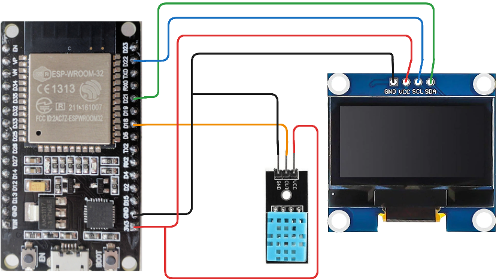
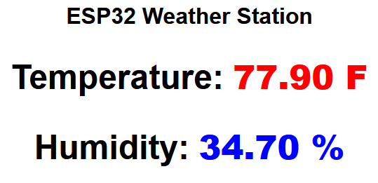

Lets dive right into this one and let the code (//and code comments) speak for itself!
Here is how to connect your sensor and display:

Here is the Code, put this into your Arduino IDE:
//libraries we will use
#include <Wire.h>
#include <Adafruit_GFX.h>
#include <Adafruit_SSD1306.h>
#include <DHT.h>
#include <DIYables_ESP32_WebServer.h>
//oled settings
#define SCREEN_WIDTH 128
#define SCREEN_HEIGHT 64
//temp sensor pins
#define DHT11_PIN 18
//Variables for the site, [global variables]
float tempF = 0;
float humi = 0;
unsigned long lastUpdate = 0;
//this is for the temp sensor
DHT dht11(DHT11_PIN, DHT11);
DIYables_ESP32_WebServer server;
Adafruit_SSD1306 display(SCREEN_WIDTH, SCREEN_HEIGHT, &Wire, -1);
//you need to put YOUR wifi info here
const char WIFI_SSID[] = "WIFINAMEHERE";
const char WIFI_PASSWORD[] = "YOURWIFIPASSWORDHERE";
//this controls your website, if your familiar with html
//look at the String(tempF) and String(humi)
//those are the values our sensor sends to the website
void handleHome(WiFiClient& client, const String& method, const String& request, const QueryParams& params, const String& jsonData) {
String html = "<html><head><meta http-equiv='refresh' content='5'></head><body style='font-family:sans-serif; text-align:center;'>";
html += "<h1>ESP32 Weather Station</h1>";
html += "<div style='font-size: 24px;'>";
html += "<h1>Temperature: <b style='color:red;'>" + String(tempF) + " F</b></h1>";
html += "<h1>Humidity: <b style='color:blue;'>" + String(humi) + " %</b></h1>";
html += "</div></body></html>";
// .c_str() converts the String to the format the library requires
server.sendResponse(client, html.c_str());
}
void setup() {
Serial.begin(9600); //for serial monitor logs
dht11.begin(); //starts the sensors
if (!display.begin(SSD1306_SWITCHCAPVCC, 0x3C)) {
for (;;)
;
}
server.addRoute("/", handleHome);
server.begin(WIFI_SSID, WIFI_PASSWORD);
//all the display settings for ini
display.clearDisplay();
display.setTextSize(1);
display.setTextColor(WHITE);
}
void loop() {
// Handle web requests constantly (No delays)
server.handleClient();
// update sensors and mini oled every 2 seconds
if (millis() - lastUpdate >= 2000) {
lastUpdate = millis();
tempF = dht11.readTemperature(true);
humi = dht11.readHumidity();
// Update OLED, the dashes are for style
display.clearDisplay();
display.setCursor(0, 0);
display.println("-------------");
display.println("SYSTEM ONLINE");
display.println("-------------");
display.print("Temp: ");
display.print(tempF);
display.println(" F");
display.println("-------------");
display.print("Humi: ");
display.print(humi);
display.println(" %");
display.println("-------------");
display.display();
}
}
Alright, now that we have the code lets talk about how this thing works. It is normal for this code to take a while to compile and upload. 1st time it took me about 1 to 2 minutes!
You will want to go to the serial monitor, use 9600 Baud, and you will see a console output saying the IP you should put in your browser. If you need to know how to get to serial monitor its in the top tool bar under tools. I would show you this step but the output from the serial monitor will be different for everyone.
When you navigate out to the site, it should look something like this and auto update:

Some troubleshooting steps if you get stuck:
-Check your serial monitor output
-After uploading the code, unplug and plug in your esp32 again
-Copy the code again, put the wifi info into the variables
-Check your wires and DHT11, they can have a different pinout
-Check OLED they can have a different pinout
-Make sure your libraries are installed correctly
-Sometimes libraries can be nammed very similar
I would like to also thank the people who made the libraries and took the time to document making ESP32 websites![randomnerdtutorials, esp32io, adafruit, and Talking Electronics]